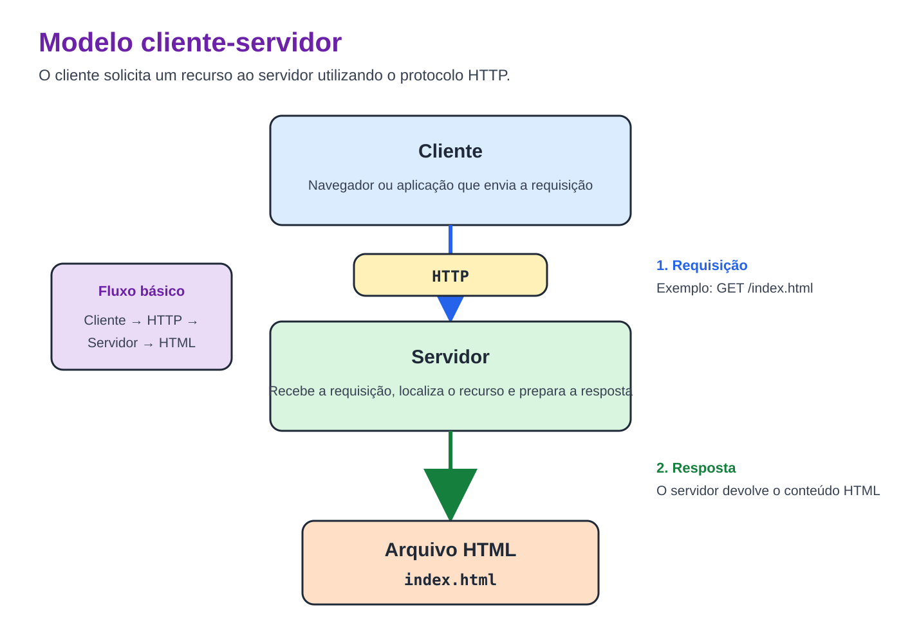
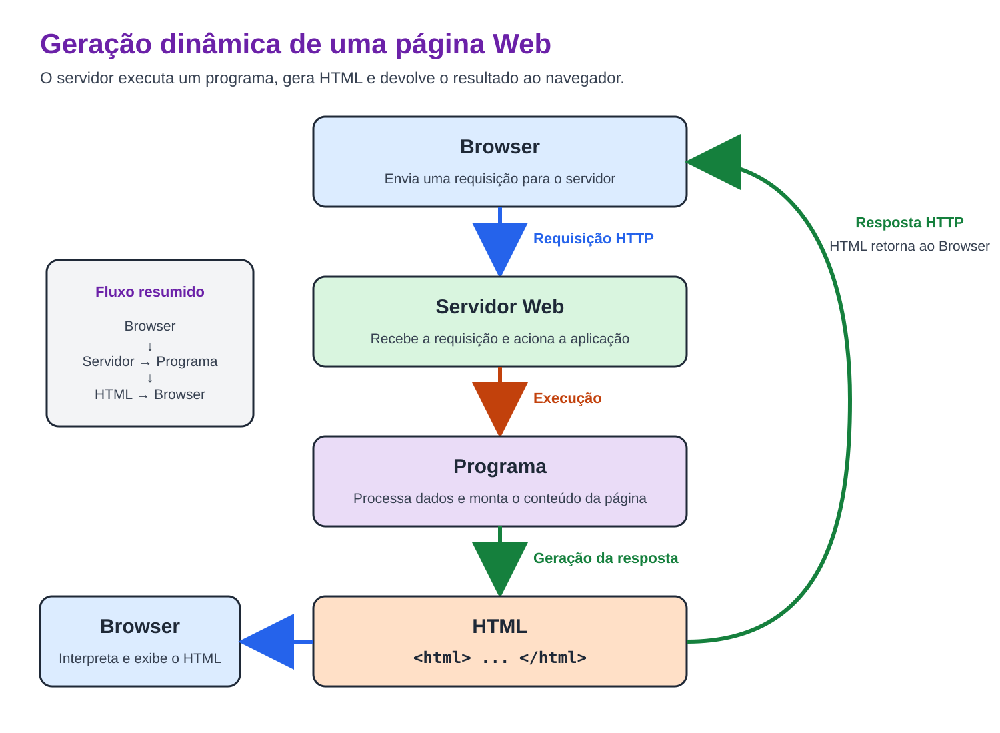
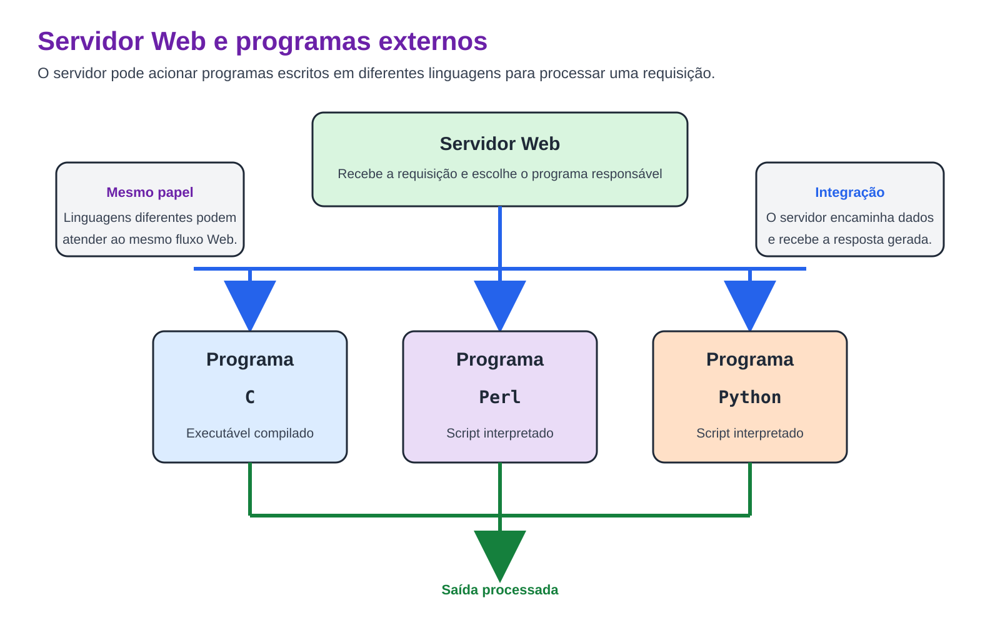
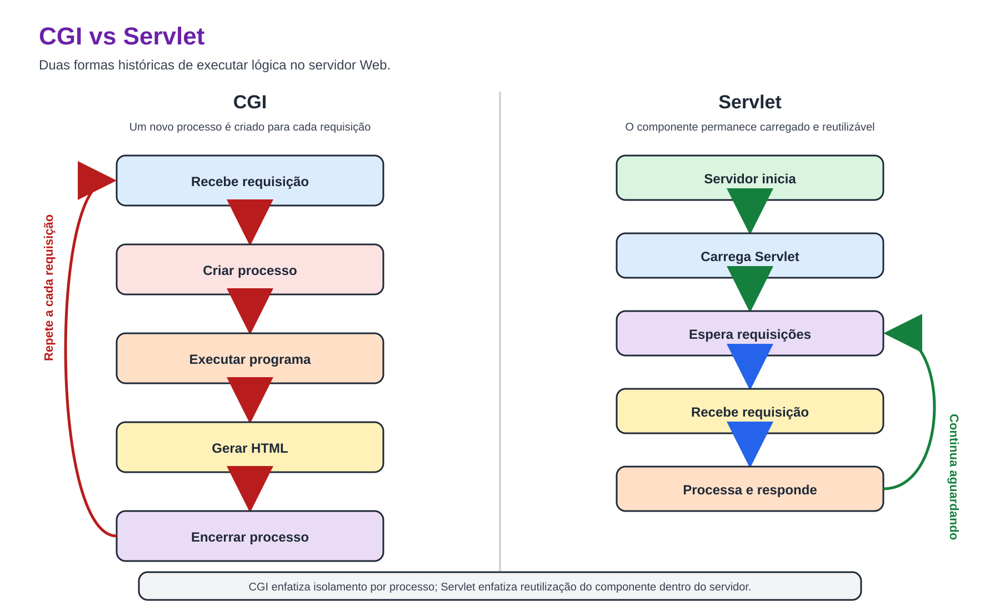
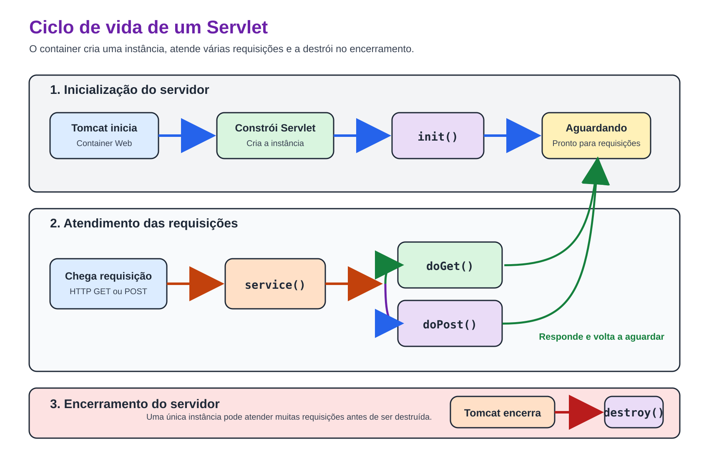
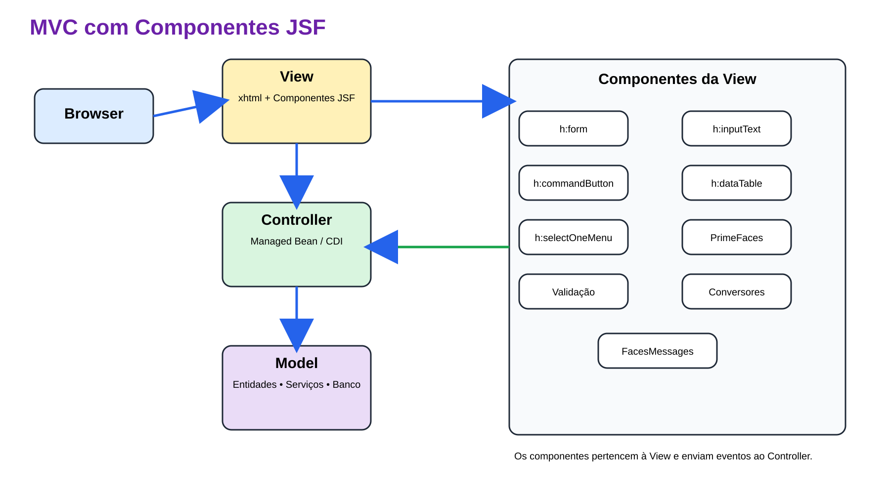
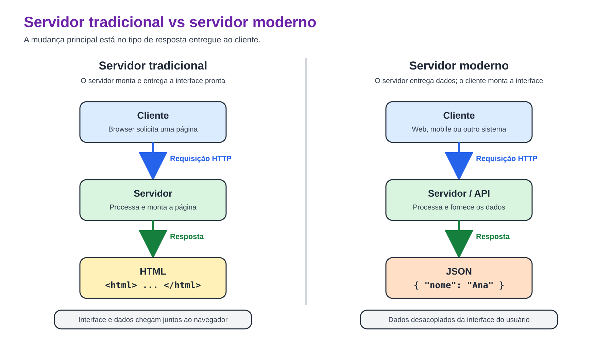

Prof. Me. Gustavo Ferreira Palma
Quem Sou eu?
Formação Acadêmica
- Técnico em Informática - Etec Waldyr Duron Júnior
- Tecnólogo em Análise e Desenvolvimento de Sistemas - FATEC Ourinhos
- Especialista Em Eletrônica Embarcada - UNISAL
- Mestre em Inteligência Computacional Aplicada - UTFPR
Experiência Profissional
- Analista de Tecnologia - Chiptronic Eletrônica do Brasil (2011-2019)
- Professor de Graduação - Eduvale Avaré (2017-2019)
- Analista de Desenvolvimento - Stoneridge Brasil (2019-2020)
- Consultor Tecnológico - Instituto de Pesquisas Eldorado (2020)
- Professor de Graduação e Pós-Graduação - UNISAL (2023)
O que Vamos Estudar?
- Desenvolvimento de Aplicações Web
- Desenvolvimento Backend utilizando Spring
- Desenvolvimento de APIs para integração de sistemas
- Desenvolvimento de arquiteturas de sistemas desacopladoss
- Desenvolvimento de Aplicaçoes Mobile
- Sistemas Operacionais Móveis
- Kit de Sensores nos dispositivos
- Câmera
- Mapas e GPS
- Conectividade
- Entre outros...
s
Métodos de Avaliação
- Majoritariamente avaliações práticas;
- Se/Quando Necessário, Avaliação escrita;
Combinados de Ouro
- Nosso Curso é PRESENCIAL, então para ter presença é preciso estar PRESENTE;
- Abono de Faltas, somente com atestado e casos previstos;
- Nossa Sala de Aula é um ambiente seguro, fiquem a vontade para perguntar, tirar dúvidas, fazer
experimentos, é um prazer ajudar e contribuir para o crescimento de cada um de vocês;
- Evitem Conversas Paralelas, por mais que pareça que temos muito tempo, nosso tempo em sala de aula é
curto, aproveitem;
Combinados de Ouro
- Se tivermos alguma atividade manuscrita, caprichem na caligrafia, não sou farmacêutico, se eu não
conseguir ler, não tem nota;
- Lembrem-se em toda e qualquer atividade que desenvolvermos, eu sei que o Chat-GPT sabe como resolver,
nesse momento quero saber de vocês, não tenham medo de errar, de testar, de experimentar, perguntem se
necessário, desenvolvam suas capacidades.
- Guardem as conversas para momentos extra-classe, todos aqui são amigos, mas durante as aulas, o
importante é ouvir, perguntar e
interagir, com o professor.
O que são aplicações Web?
O que são aplicações Web?
- Aplicações Web são softwares executados por meio da Internet ou de uma rede local, acessado normalmente
por um navegador ou outro cliente HTTP(S).;
- As principais Caracteristicas são:
- Cliente-Servidor
- Comunicação HTTP, ou ainda na sua versão segura (HTTPS)
- São independentes do sistema operacional
- Acesso Remoto
O que são aplicações web - Como tudo começou?
- CERN: Renomado centro de pesquisa, lar do Grande Colisor de Adrons, na época tinha um problema, trocar
informações entre diferentes sites, utilizando diferentes arquiteturas de computadores e sistemas
operacionais;
- Tim Berners-Lee: Considerado por muitos o "Pai da Internet", é o criador do HTML, linguagem de escrita de
páginas, o fundamento da web-moderna;
- HTML: Linguagem de marcação de texto utilizada para formatar páginas e entregar conteúdos de forma visual
simplificada;
- HTTP: Protocolo para trasferência de hipertexto, reposnável por transmitir arquivos através da Internet
- URL: Padrão utilizado para descrever endereços na internet
Primeiro objetivo aqui, compartilhar documentos científicos
O que são aplicações web - Como tudo começou?

O foco aqui é a entrega de arquivos/informações, não existe qualquer programação ou dinamismo no processo
O que são aplicações web - Como tudo começou?
Página HTML simples
html>
<h1>Minha Página</h1>
</html>
Sempre retorna exatamente o mesmo conteúdo.
O que são aplicações web - Como tudo começou?
- Esse modelo inicial apresentado é muito eficiente parar disponibilizar dados científicos, que não mudam
tanto, contudo quando essa solução foi levada para o mercado "civil", alguns problemas começaram a ser
notados:
- Imagine um site de notícias.
- Como atualizar centenas de páginas?
- Como mostrar usuários diferentes?
- Como acessar bancos ded dados?
- Nesse modelo, nada disso é possível
O que são aplicações web - Como tudo começou?
- Na tentativa de resolver esses problemas, surge o CGI (Common Gateway Interface), o primeiro mecanismo
capaz de gerar páginas com conteúdos dinâmicos

O que são aplicações web - Como tudo começou?
- Perceba, que o CGI não definie uma linguagem de programação, ou ainda uma tecnologia específica;
- O CGI, foca em definir como os componentes vão se comunicar, e não as tecnologias, de linguagem, ou
mesmo banco de dados envolvidos
- O CGI apenas define como o servidor executa um programa e recebe sua saída.
O que são aplicações web - Como tudo começou?

O que são aplicações web - Como tudo começou?
- Problemas do CGI:
- novo processo
- lento
- alto consumo de memória
- difícil manutenção
O que são aplicações web - Como tudo começou?
- Para tentar resolver o problema do CGI, a Sun Microsystems, desenvolve então uma tecnologia capaz de
contornar as limitações do CGI.
- Assim surgem os Servlets que, ao contrário dos softwares CGI, se mantém executando, e para cada nova
requisição uma Thread é lançada, tornando-o um substituo eficiente aos ambientes CGI
- A grande diferença aqui é que os servlets propostos pela Sun, se aplicavam unica e exclusivamente ao Java
O que são aplicações web - Como tudo começou?

O que são aplicações web - Como tudo começou?
- Para gerenciar/controlar a execuções dos Servlets, é necessário um Servlet Container, assim surge o
Tomcat capaz de:
- receber HTTP;
- interpretar a requisição;
- localizar o Servlet correto;
- criar objetos Request e Response;
- chamar o método adequado;
- devolver a resposta.
O que são aplicações web - Como tudo começou?
- Na solução dos servlets tudo que o desenvolvedor precisava fazer era:
public class ProdutoServlet extends HttpServlet {
}
- Todo o resto do trabalho fica a cargo do Tomcat
O que são aplicações web - Como tudo começou?

O que são aplicações web - Como tudo começou?
- Essa estratégia resolveu muitos problemas de desempenho e o ciclo de vida proposto e implementado pelos
Servlets é utilizado até hoje pelas aplicações Java Web
- Contudo o Servlets ainda não conseguiram resolver o problema de misturar códigos de regras de negócio, com
códigos de exibição de páginas, os softwares ainda misturavam HTML com lógica
- E na Tenttiva de resolver esse problema surge uma nova tecnlogia, o JSP (Java Server Pages), onde ao invés
de escrevermos HTML na Lógica Java, podíamos escrever Java no HTML
- Uma coisa muito parecida aconteceu com outra linguagem de programação o PHP
Aplicações Web Modernas - O Modelo MVC
- Desde o início das aplicações web, um dos principais "problemas", ou ainda limitantes para a organização,
ou mesmo arquitetura das aplicações é a "mistura" de regras de negócio e regras para construção de
aplicações;
- Muito difundido com a popularização dos frameworks mobile, o modlo de desenvolvimento MVC, a aplicação em
camadas conceituais, definindo como as interações como o usuário, criação de interfaces, e regras de negócio
devem acontecer, tornando o software mais organizado menos modular e mais fácil para manter;
Aplicações Web Modernas - O Modelo MVC

Aplicações Web Modernas - O Modelo MVC
- Uma tecnologia de desenvolvimento Java para Web que praticamente obrigava o desenvolvedor a aplicar os
conceitos de MVC foi o JSF (Java Server Faces)
- O JSF é caracterizado por aplicações contextualizadas, com domínio de dados separado dos controladores de
tela, acima do modelo por arquitetura de controle
- O JSF é marcado por blibliotecas de componentes ricos, as chamadas Rich Faces, Interfaces
com componentes ricos, altamente intuitivos e com recursos que permitiam a customização máxima dos usuários,
como principais frameworks temos o Primefaces e o Bootsfaces
Aplicações Web Modernas - O Modelo MVC
- Mesmo com tantas melhorias, o modelo de trabalho do JSF estava longe de ser perfeito, ou ainda mesmo
equilibrado:
- Devido a sua estrutura de criação as páginas construídas tinham muitos códigos, as páginas em si, não
eram facilmente reaproveitadas;
- Os controladores, eram responsáveis por gerenciar diversos estados para as páginas;
- O modelo de construção baseado em estados, concentrava muito processamento no servidor, o que por vezes,
sobrecarregava os servidor, e o tornava um pouco lento, em alguns cenários específicos;
- Inicialmente o modelo JSF não foi pensado para ter um bom desempenho em smartphones;
- As mudanças no modo como usamos a internet contribuíram para a obsolescência dessa tecnologia,
aplicações em smartphones, tablets e TVs exigem uma interface gráfica mais versátil e desacoplada dos
controladores
Aplicações Web Modernas - Os Serviços REST
- A estratégia então escolhida para resolver esse problema são os serviços REST (Representational State
Transfer), que carrega uma ideia simples porém extramente eficiente;
- Com o modelo REST, as aplicações passam a não mais criar ou reenderizar telas, eles passam a simplesmente
entregar dados, e nesses dados temos as representações de estados, indicativos e dados úteis aos usuários
Aplicações Web Modernas - Os Serviços REST

Aplicações Web Modernas - Os Serviços REST
- Os dados podem vir do servidor em diferentes tipos de "Empacotamento":
- JSON - Javascript Object Notation
{
"id":10,
"nome":"Notebook",
"preco":3200
}
- XML - Extensible Markup Language
<produto>
<id>10</id>
<nome>Notebook</nome>
<preco>3200</preco>
</produto>
Aplicações Web Modernas - Os Serviços REST
- Com isso pode surgir uma dúvida, Quem ou o quê pode consumir os serviços REST?;
- Quaisquer applicações desenvolvidas em práticamente quaquer linguagem, basta que ela seja capaz de
executar uma requisição HTTP(S)
- Dessa forma se consolida a separação entre back-end e front-end, repare que ela se consolida
aqui, o conceito já existia antes
- Outro ponto importante para defirnir aqui é o termo API (Application Programming Interface), é uma chamada
com protocolo e dados bem definidos que permitem que aplicações interajam entre si
- Tenha sempre em mente: API não é sinônimo pra REST, REST não é sinônimo de API, e tampouco API significa
internet
- REST é mais um tipo de API dentre tantos outros existentes
Aplicações Web Modernas - Os Serviços REST
- De forma simplificada o REST, utiliza métodos do protocolo HTTP para implementar seus serviços e chamadas
de API:
- GET: Solicita ou consulta informações existentes no servidor, sem modificar os dados.
- POST: Envia novos dados ao servidor, normalmente para criar um novo recurso.
- PUT: Atualiza ou substitui completamente um recurso existente.
- DELETE: Remove um recurso existente do servidor.
- Lembrando que esses não são todos os métodos são apenas os métodos principais
Qual técnologia Vamos usar
Qual técnologia Vamos usar
- Durante as aulas vamos utilizar um framework para desenvolvimento web Chamado Spring;
- O Spring Boot atualmente é um padrão de mercado, utilizado nos mais diversos setores desde o setor
financeiro até projetos de automação, internet das coisas e atualizações remotas
- Se, fossemos optar por desenvolver applicações sem um framework como o Spring teríamos:
- tarefas extensas de configuração de ambientes
- uso intenso de arquivos XML
- Tomcat para gerenciar
- Uma série de dependências de bibliotecas para gerenciar manualmente
- Já utlizando o Spring, as tarefas de configuração são minimas, e o foco para o desenvolvedor fica quase
que inteiramente no desenvolvimento das regras de negócio, todos os códigos repetitivos e massantes são
gerados de forma automática baseados nos requisitos
OBRIGADO!
Podem me encontrar aqui:
- gustavo.palma@unisal.edu.br
- www.gustavopalma.com.br